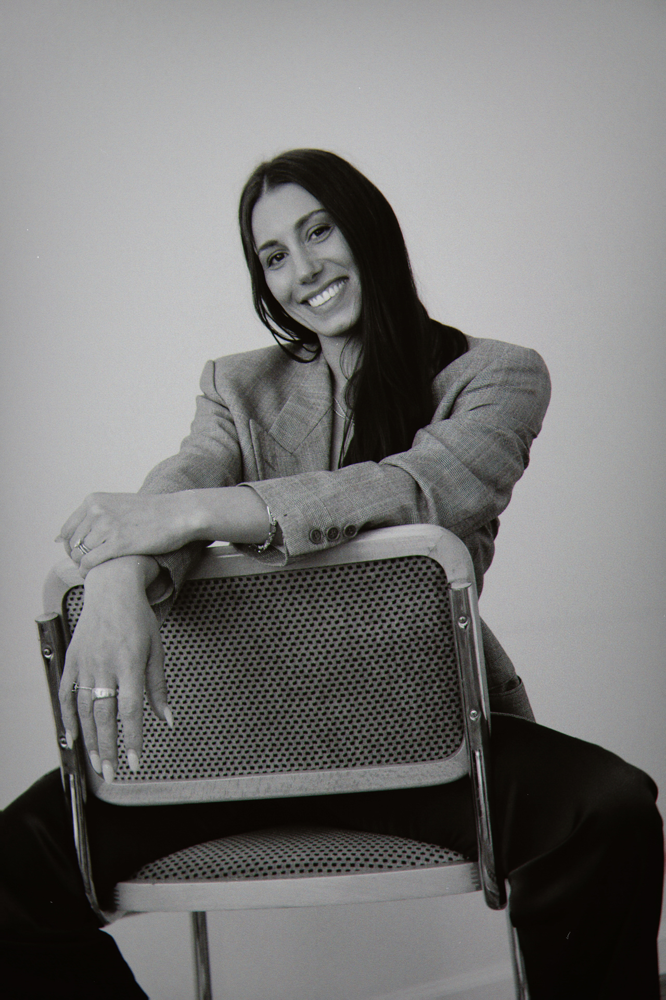

Meet the founder

Hey, I'm Justine —
My path to wedding planning began in an unexpected place: at my desk in the New York City fashion industry, where I found myself planning and designing my own wedding mood boards between managing spreadsheets. The joy I discovered in that process gave me the clarity and courage to pursue the work that truly lights me up. Today, I blend calm, intentional execution with an editorial eye to create celebrations that feel as seamless as they are beautiful.
Before transitioning to weddings, I spent nearly a decade in fashion managing multi-million-dollar accounts and merchandising large-scale tradeshows across the country. That background is my secret weapon - shaping my approach to organization, vendor management, complex budgeting, and steady problem-solving under pressure.
Since then, I've planned and coordinated countless celebrations - from weddings to bridal showers and bachelorette parties. I now work in the wedding world every day - from tastings to timelines, vision boards to vendor bookings, rehearsal to day-of helping couples bring their ideas to life, including being a full-time day of coordinator at the venue where my own wedding took place, making the experience especially full-circle.
One of the things I love most about wedding planning is the collaboration. I work alongside incredibly talented creatives - florists, photographers, musicians, and beyond - blending fashion, creativity, and storytelling into one cohesive experience. Creating has always been at the center of my life, and I believe weddings should reflect the unique story, style, and energy of each couple, filled with joy, ease, love, and beauty.
My goal is to take the stress off your shoulders and turn your vision into a celebration you'll remember forever. Whether it's full planning, partial planning, or day-of coordination, I'll handle the details so you can stay present and enjoy every moment.
I can't wait to create something unforgettable together.